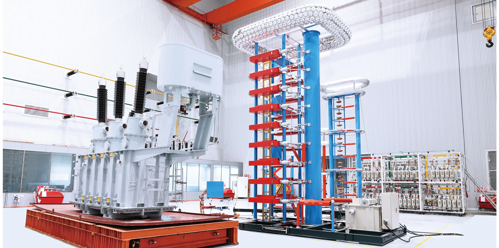
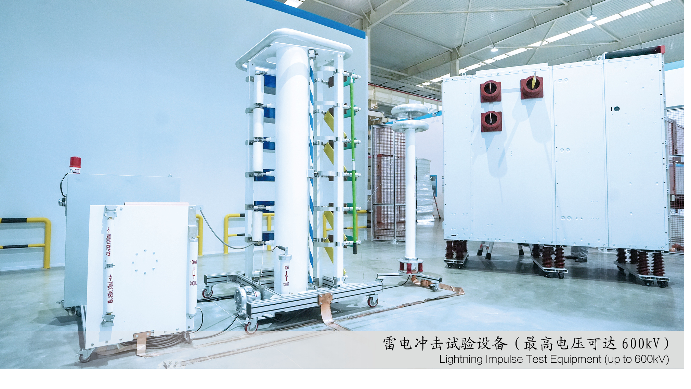

← BACK TO HOME
Testing & Verification
Advanced equipment for transformer verification.
Dedicated test facilities support routine testing, agreed FAT and engineering review.TESTING FACILITY
Equipment and records behind verification.


Test capability
Tianyu's published factory material shows a large transformer test station, lightning-impulse test equipment and a dedicated generator set, alongside switchgear test facilities. The exact test program is defined by product, applicable standard and project specification.
Process equipment
Manufacturing assets include large oil-transformer winding equipment, automatic core cutting, welding robots, dry-type casting lines and digital production-management systems.
Transformer testingLarge transformer test station
Impulse testingLightning impulse equipment
ProductionAutomated winding & core processing
DocumentationTest records / FAT by scope